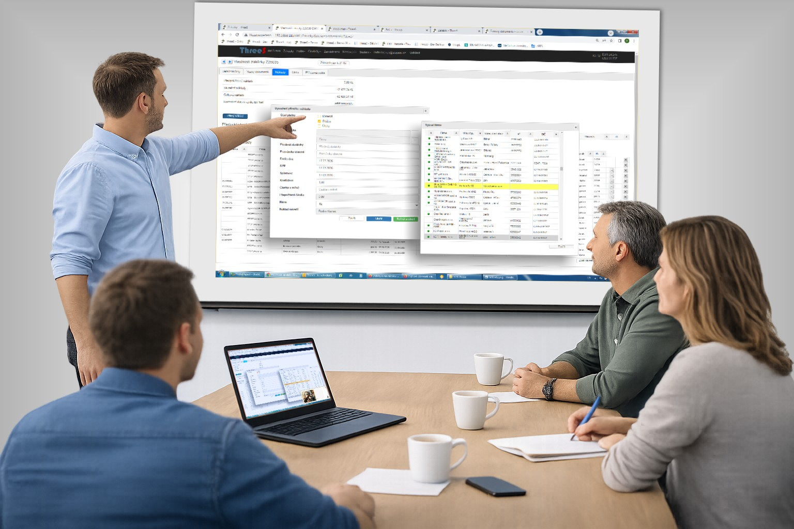

Přečtěte si náš příběh o tom, jak vznikl ThreeS - systém ušitý na míru reálným potřebám reálných firem.
Excel je skvělý nástroj. Ale když firma roste, začnou se objevovat problémy. Více verzí souborů, ztracené dokumenty, nejasné náklady zakázek…
Proto jsme jednoho dne v roce 2018 začali vyvíjet vlastní systém, na míru našim potřebám, bez nutnosti investovat už v prvopočátku milion a více peněz za něco, o čemž jsme dopředu věděli, že to stejně pokryje naše požadavky sotva tak z poloviny. Tak vznikl ThreeS.
Systém má svého architekta a stratéga, grafika a testera, a hlavně schopného programátora, který dokáže všechny požadavky současné i budoucí převést do reálné podoby. Téměř všechny funkcionality ThreeSu jsou známé z jiných systémů, my jsme však udělali to, že jsme nejen skloubili mnohé funkce různých programů do jediného, ale hlavně k nim přidali řešení (nejen) našich specifických požadavků.
ThreeS není produkt velké korporace. Je to zhmotnění příběhu lidí a vyvíjený dlouhodobě s firmami, které pracují na zakázkách. Také díky tomu je možné jej přizpůsobit konkrétním potřebám každého uživatele.
Máte zakázky v tabulkách Excelu. Dokumenty v mejlech a na serveru a ještě… kdovíkde. Materiálové, službové, mzdové náklady jsou v jednom poli zvaném Celkové. Poznáváte se v tom?
Asi tušíte, že máte problém, ale stále si nejste jisti, jestli potřebujete informační systém.
Nabízíme Vám krátkou konzultaci, při níž projdeme Váš způsob evidence zakázek a ukážeme možnosti zlepšení. Bez závazků.
Napsat námJe to prosté. 3 S.
„S", která spojují tři klíčové oblasti řízení firmy:
